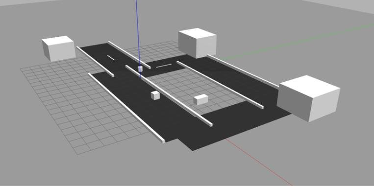
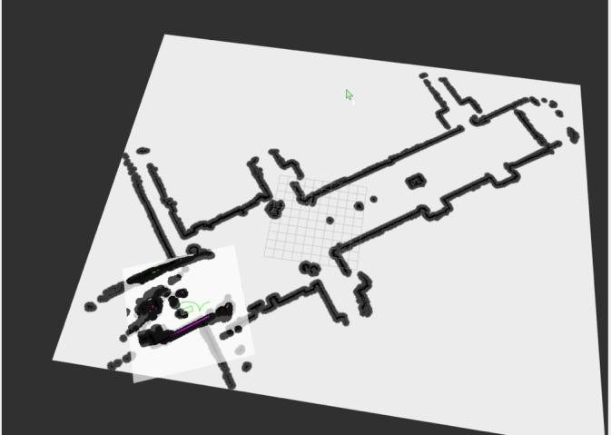

Automated Solar-Powered Vehicle
A low-speed electric vehicle for the KAU campus that drives itself to a destination picked on a map, stops when a person steps in front of it, and charges from the sun.
The problem
Small electric vehicles on campus depend on a driver and on charging from the grid. The goal was a prototype that removes both: it navigates on its own using a saved map, stops safely around people, and gets its energy from a solar panel. The project also supports Saudi Vision 2030 goals for renewable energy and smart transport.
What I built
I was responsible for the autonomy software, running on ROS2 Humble:
- ROS2 architecture. Nodes for the LiDAR, camera, Arduino bridge, TF transforms and RF2O laser odometry, so each part of the system can be developed and tested on its own.
- Navigation with Nav2. Mapping with the 2D LiDAR, localization on the saved map, and path planning to a goal chosen from a web page or RViz. I tested everything in Gazebo simulation before running it on the vehicle.
- Human detection and emergency stop. A YOLO-based camera node that publishes a stop signal when a person is in the path. The Arduino bridge stops the motors, and the vehicle resumes once the path is clear.




Results
Each requirement from the design specification was tested over five trials.
| Test | Requirement | Measured | Status |
|---|---|---|---|
| Destination accuracy | Stop within 1 m of the goal | 5 of 5 within radius, 0.11 to 0.72 m error | Pass |
| Human detection | Detect every time, react in under 0.25 s | 5 of 5 detected at 1.5 to 11.7 m, 81 to 95% confidence | Pass |
| Speed | 0 to 25 km/h | 2.4 km/h average, stable across trials | Pass |
| Stopping distance | Short, safe stop at test speed | 0.13 to 0.18 m | Pass |
| Solar charging efficiency | 75 to 85% | 75.2 to 83.7% | Pass |
One thing I learned
With a strict goal tolerance in Nav2, the vehicle kept moving back and forth trying to land on the exact point. Relaxing the tolerance so it stops as soon as it enters the 1 m zone made the arrival smooth and still met the requirement. Good engineering is often about tuning to the real requirement, not to perfection.
The rest of the system
My teammates built the steering and throttle hardware and the solar charging station: a 100 W panel, MPPT charge controller and 12 V lithium battery, monitored by an ESP32 web dashboard that logs readings to CSV.

What I would improve next
- Move from the laptop to an embedded computer such as a Jetson Orin Nano.
- Use a 3D LiDAR, an IMU and a depth camera for outdoor navigation.
- Train the detection model on more classes for better obstacle classification.
Tools: ROS2 Humble, Nav2, AMCL, Gazebo, RViz, Python, YOLO, 2D LiDAR, Arduino Uno, BTS7960 motor driver.